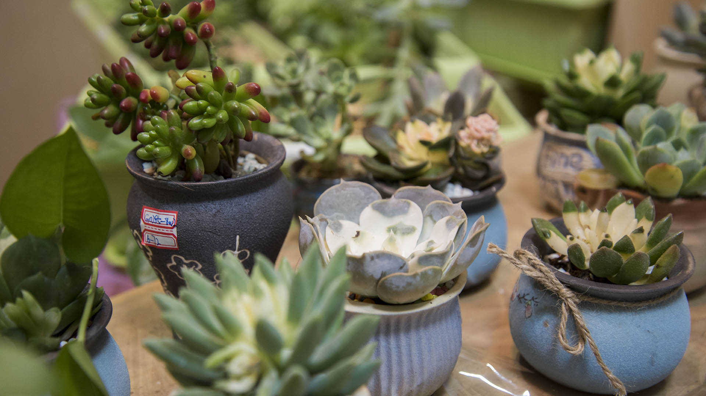

多肉入新家
2018-07-15 21:11:46 王亚楠 156

随着人们审美观念的不断提高，在众多新居与商场的软装上，绿植无疑备受青睐。一年四季常青的绿萝、寓意良好的发财树、可爱秀气的多肉都是不错的选择，她们往往会给整个夏日带来一丝清爽，如枯燥沙漠中涌出的一簇绿洲，如干涸枯井中冒出的一弯新叶，解渴，清新，时尚。
今天我们浅谈一下绿植新贵---多肉植物入新家的几点经验。

刚淘回家的多肉往往自带一个简易的塑料小盆，放在家中显得那么格格不入，这个时候给她换一个新家就显得非常有必要。如果你只想让她出状态、出颜色，那么建议你选择与之大小相等的花盆。如果你想让她繁殖的更快，可以选择大号花盆。
多肉必须经过一段时间适应期，也就是安全度过缓苗期，就说明她入盆成功，真正进入新家了。首先我们需要晾根、修根、再晾根。把刚入手的多肉放在阴凉通风处晾1-2天，这样那些失去生命力的老根、腐根用手轻轻一捋就掉了，根系如果不清理干净，会影响她吸收水肥，也会蔓延到健康根系影响生长。修理干净后在阴凉处再晾1-2天就可以入盆了。

下一步我们要注意的是选择配土，最好是土壤要疏松透气利水保湿，没有虫害，市面上多是草炭土加一些鹿沼石、小石等。切记不能把土按实，影响多肉根系呼吸。

浇水原则也很重要，刚入盆时土壤只要拌湿就行，可在周围喷雾，不要浇大水，等稳定后要“见干见湿”，要浇透，看到有水在盆底滴出即可。
最后注意缓苗期多肉不能大晒，在强光下直晒会晒伤，应放在散光阴凉处；最好不要移动位置，等1-2周后新老叶更替、新叶萌发、生长速度加快就说明已经顺利度过缓苗期了。
看到这些小生命入新家，喜悦之情不言而喻。